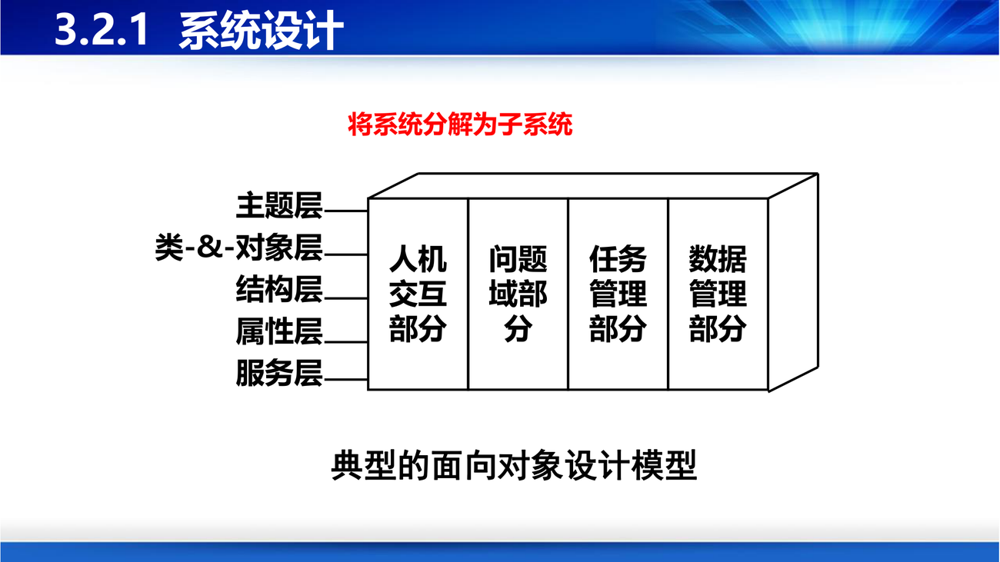
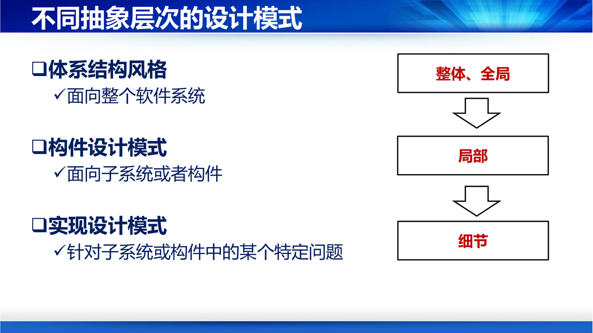

课件第 52 页的定义值得逐字读：
针对面向对象需求分析所得到的软件需求模型（如用例图、交互图、分析类图），对其进行不断精化（而非转换），获得软件系统的各类设计元素，如子系统、构件、设计类等，产生不同视角、不同抽象层次的软件设计模型，如软件体系结构图、用例设计交互图、设计类图、活动图等，形成软件系统完整和详尽的设计方案。
补"精化（refinement）而非转换（transformation）"这四个字是 OO 设计的关键区别。结构化方法里，分析模型（数据流图）和设计模型（结构图）是两套完全不同的表示，要靠人工"转换"，转换过程容易丢信息、出偏差——第 5 讲提到的"结构化分析技术存在一个致命的弱点：分析模型和设计模型之间存在本质性的断层"说的就是这件事。而 OO 方法里，分析类图和设计类图用的是同一套概念（类、属性、操作、关联），设计只是把分析模型"加细节"：加接口、加可见性、加具体的数据类型、加辅助类。没有断层，所以不容易丢东西。
课件第 54 页给的流程：
软件体系结构设计 → 用户界面设计 → 构件/子系统设计 → 用例设计 → 数据设计 → 类设计
（详细设计）
贯穿全程的支撑是"面向对象的概念、机制和建模语言"。
典型的面向对象设计模型（PPT 第 55 页）由四个部分组成，这和第 5 讲对象模型的五个层次是对应的：
问题域部分 人机交互部分
任务管理部分 数据管理部分
| 子系统 | 职责 |
|---|---|
| 问题域子系统 | 存放从分析模型直接来的领域类（ATM、账户、储户……） |
| 人机交互子系统 | 界面类，负责输入输出 |
| 任务管理子系统 | 并发、进程/线程、事件驱动 |
| 数据管理子系统 | 持久化：选存储方式、设计数据格式与相应服务 |

五个动作：①调整需求；②重用已有的类；③把问题域类组合在一起；④增添一般化类以建立协议；⑤映射到具体结构（ATM 例）。
补"重用已有的类"排在第二位，很说明问题：设计阶段第一件该想的事不是"我要写什么"，而是"我手上有什么"。这和敏捷里"不要重复造轮子"、第 1 讲讲开源重用是同一个逻辑。
界面设计七准则（课件原文）：一致性、减少步骤、及时提供反馈信息、提供撤消命令、无须记忆、易学、富有吸引力。
设计策略：
先分析并发性：通过 OOA 建立的动态模型判断——如果两个对象彼此之间不存在交互，或它们同时接受事件，则这两个对象在本质上是并发的。
然后设计任务：确定事件驱动型任务、时钟驱动型任务、优先任务、关键任务、协调任务；尽量减少任务数；确定资源需求。
数据管理子系统是"系统存储或检索对象的基本设施"，它建立在某种数据存储管理系统之上，并隔离了数据存储管理模式的影响。
两个设计步骤：
补"隔离存储模式的影响"这句话是这一页的精华：它意味着问题域的对象不应该知道数据存在 MySQL 还是文件里，中间要有一层负责转换（这就是后来"数据访问层/Repository 模式"的雏形）。换数据库时只改这一层，上层不动——这是第 6 讲"信息隐藏"原则在架构上的直接应用。
课件第 56–59 页给了两个关键定义：
软件体系结构（Software Architecture，SA），也称软件架构：从高层抽象角度刻画组成软件系统的设计元素及它们之间的逻辑关联。
软件设计模式：以设计重用为目的，采用一种良定义的、正规的、一致的方式记录的软件设计经验；关注在一般或特定设计环境中可能重复出现的设计问题，并给出经过充分实践考验的解决方案。它的要素有五项：名称、问题、施用和约束条件、解决方案、效果。
三层抽象（PPT 第 58 页），这是理解"模式"这个词的关键：
| 层次 | 面向 | 例子 |
|---|---|---|
| 体系结构风格 | 整个软件系统 | 分层、管道与过滤器、黑板、MVC、SOA、总线 |
| 构件设计模式 | 子系统或构件 | （中间层模式） |
| 实现设计模式 | 构件中某个特定问题 | 23 种 GoF 模式（工厂、单例、观察者……） |
补这三层的关系可以这样理解：架构风格是"城市的规划"（路怎么走、区分几个片区），构件模式是"小区的设计"（楼怎么排），实现模式是"户型的装修"（房间怎么分隔）。越往上越影响全局，越往下越影响局部。第 7 讲会详细展开六种架构风格和 23 种设计模式的分类。

课件第 121 页给了四条，每条都有实际含义：
| 优势 | 含义 |
|---|---|
| 高层抽象和自然过渡 | OO 概念贴近现实，减少工程师与用户的交流鸿沟，支持大型复杂系统开发 |
| 多种形式和粗粒度的软件重用 | 封装、接口、继承、多态都支持重用；重用的粒度可以是类、构件、框架 |
| 系统化的软件设计 | 系统性支持架构设计、界面设计、数据设计、构件设计、子系统设计、用例设计、类设计 |
| 支持软件的扩展和变更 | 接口、抽象类、继承、实现等机制，可设计出易于扩展变更的模型 |
补第 2 条"粗粒度重用"值得展开：结构化方法的重用单位是函数（十几行），OO 的重用单位可以到类（几百行）、构件（几千行）、框架（几万行，如 Spring）。粒度越来越大，是因为封装把"一堆相关的函数和数据"打成了一个可整体搬走的包裹。这也呼应第 2 讲"重用粒度越来越大"的发展规律。
输出两件套（PPT 第 123 页）：
设计文档规范（PPT 第 124 页）的章节结构：文档概述 → 系统概述 → 设计目标和原则 → 设计约束与现实限制 → 体系结构设计 → 用户界面设计 → 子系统/构件设计 → 用例设计 → 类设计 → 数据设计 → 接口设计。
补注意"设计目标和原则"这一章——它要求设计师把自己的取舍写下来："为了性能牺牲了一层抽象""为了兼容旧接口保留了一个冗余字段"。这一章是给三年后的维护者看的，也是最有价值的一章，但最常被跳过。
四类设计缺陷（PPT 第 125 页）：
| 缺陷 | 表现 |
|---|---|
| 设计未能满足需求 | 对需求理解有偏差，设计的软件无法满足用户需要 |
| 设计质量低下 | 未遵循设计原则、缺乏经验，导致不易维护和扩展 |
| 设计存在不一致 | 不同设计制品对同一设计有不同描述，或要素之间不一致、冲突 |
| 设计不够详尽 | 没提供细节，程序员无法据此编码 |
评审要点（PPT 第 126 页）：
补把"程序员"列为评审人是很聪明的一招：因为程序员是设计的第一消费者，如果程序员看不懂设计、或者看完还得再问十遍，那这份设计就是不详尽的。让下游用户参与评审上游产物，是保证"信息传递不丢"的最有效手段。
设计管理（PPT 第 127 页）：变更管理（哪些变了、反映在哪、版本怎么变）、追溯管理（什么原因导致变更、评估影响域）、基线管理（通过评审后纳入基线库）。
一句话串起整讲：设计是在需求的约束下给出"实现方案"，它的核心动作是"分解 + 隐藏"，它的评价标准是"高内聚低耦合"，它的成败取决于是否遵守了那七条原则。
核心结论清单
1. 判断下面这个模块的内聚等级，并说明理由：
void processOrder() {
// 1. 校验订单合法性
// 2. 计算总价（用校验后的订单）
// 3. 生成出库单（用总价）
// 4. 打印日志
}
顺序内聚（第 6 级），接近功能内聚。理由：四个步骤都与"处理订单"这一功能相关，且按顺序执行、前一步的输出是后一步的输入（校验后的订单 → 总价 → 出库单），符合"顺序内聚"的定义。之所以不判为"功能内聚"：功能内聚要求所有成分共同完成一个单一功能，而这里实际做了"校验 + 计价 + 出库 + 日志"四件可分别命名的事，理论上可以再拆。如果第 4 步"打印日志"与其他三步无关（只是顺手加的），那这一部分会把整体拉向"时间内聚"。评分关键：说清"有数据顺序依赖 → 顺序内聚"，并指出可再细化的点。
2. 有两个模块，A 把整个 Student 对象传给 B，B 只用了其中的 name 字段。这是哪种耦合？怎么改进？
标记耦合（特征耦合）——传递的是数据结构而不是简单数据项。问题在于 B 与 Student 的完整结构耦合了：以后 Student 加字段、改字段类型、甚至改类名，B 都可能被牵连（因为它拿到了整个对象，编译器无法判断它到底用了什么）。改进：只传 name 字符串，降为数据耦合。这条改进的本质是第 6 讲的原则"模块间仅交换完成功能所必需交换的信息"（信息隐藏）。
3. 为什么"内容耦合"比"公共耦合"更糟？请从"能不能被发现"的角度解释。
因为内容耦合在接口上完全看不出来。公共耦合虽然也危险（改全局数据结构会影响所有使用者），但至少"使用了全局变量"这件事是显式的，搜一下全局变量名就能找到所有依赖点。而内容耦合是一个模块直接读写另一个模块的内部数据、甚至跳进对方内部执行，这种依赖不会出现在任何函数签名里，只能靠通读代码发现。一旦对方改了内部实现，你这边会莫名其妙地崩，而且编译器不会报错。所以耦合等级的排序本质上是"依赖的可见性"排序：越不可见越危险。
4. 老师让你"把系统拆成 30 个微服务，这样最灵活"。用软件工程基本定理和成本曲线反驳他。
要点三条：①基本定理只说"分开解决比合起来省"，它保证的是"分解有收益"，没说"越分解越省"；②成本曲线显示：模块自身成本随数量线性上升，接口开销随数量近似平方上升，总成本是 U 型，存在最小成本区域；③30 个服务意味着至少几十条跨服务调用链、几十套部署与监控、版本兼容与分布式事务问题，接口开销极可能超过分解收益。判断标准不是"数量"，而是"每个模块是否还能被一个人在一周内完整理解"。合理的反问是：这 30 个服务的边界，是按业务能力划的，还是按"技术分层"硬切的？
5. 为什么说 OO 设计的"精化"比结构化方法的"转换"更不容易丢信息？
因为表示体系是否连续。结构化方法里，分析用数据流图（数据在加工之间流动），设计用结构图（模块调用层次），二者概念体系不同，转换需要人工判断"哪个加工变成哪个模块""哪些数据流变成接口参数"，每一步都可能丢信息或引入偏差——这就是课件所说的"分析模型和设计模型之间的本质性断层"。OO 方法里，分析类图和设计类图用的是同一套元素（类、属性、操作、关联），设计只是在同一个模型上增加细节（可见性、类型、接口、辅助类、子系统划分），不需要换一套语言重画，因此信息天然连续，且可以通过"可追踪性"逐条核对。